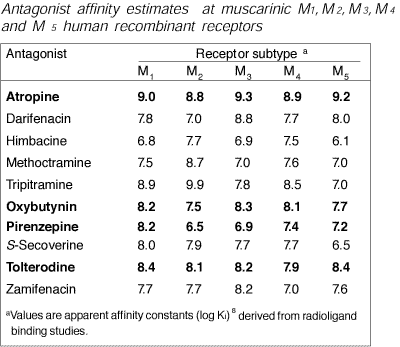

Muscarinic receptor subtypes
There are five muscarinic receptor subtypes. M1 & M5 receptors occur in neurones of the autonomic and central nervous systems. M1 receptors are involved in CNS excitation and memory, and in gastric acid secretion and gut motility. M2 receptors are found in the heart, where they slow depolarisation in the SA and AV nodes. There are also presynaptic M2 receptors in the brain, which reduce acetyl choline release. M3 & M4 receptors are found in smooth muscle and secretory glands where they increase secretion, contract smooth muscle and cause vasodilatation by increasing nitric oxide production.
M1, M3 and M5 receptors are stimulatory and cause calcium release via IP3; M2 and M4 receptors are inhibitory and reduce cAMP production.
Atropine blocks all muscarinic receptors, but specific drugs are being developed. Pirenzepine is a relatively specific antagonist for M1 receptors and is used in the gut to reduce acid secretion.

| 4 Autonomic index |
copyright
Massey University |